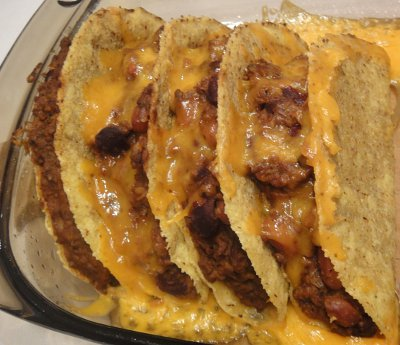

| Zutaten für 4 Personen: | |
| 2 | Zwiebeln |
| 2 | Knoblauchzehen |
| 1 El | Öl |
| 300 g | Hackfleisch |
| 2 El | Tomatenpurée |
| 1 Tl | Kreuzkümmelpulver |
| 1 Tl | Chilipulver |
| 1 Tl | Paprika |
| 1/2 Tl | Oregano |
| 1 Dose | Rote Kidney-Bohnen (Abtropfgewicht 290g) |
| 1 Dose | Vorlottibohnen (Abtropfgewicht 250g) |
| 1 Pack | Taco Shells (12 Stück, 135g) |
| 50 g | Cheddar- oder Goudakäse |
| 1 Becker | Sauerrahm |
Ergibt 8 Tacos.
Die Zwiebeln und den Knoblauch hacken.
Das Hackfleisch unter Wenden scharf anbraten. Die Zwiebeln, Knoblauch und Tomatenpuree mitbraten.
Die Gewürze beigeben und mit 1dl Wasser ablöschen.
Die Bohnen abgiessen und im Sieb abspülen. Dazugeben. 40-50 Minuten zugedeckt köcheln, ab und zu umrühren. Die Bohnen dürfen verkochen. Wenn nötig noch etwas Wasser zugeben.
Die Taco Shells mit der Bohnenmasse füllen. Eng in eine Gratinform stellen.
Den Käse durch die Röstiraffel darüber reiben.
In der Mitte des 200°C heissen Ofens schieben und 10 Minuten überbacken.
Mit Sauerrahm, Guacamole und Salatblättern servieren.
Abgewandelt aus Saison Küche 1/97 Seite 9
Schmeckt super. Im Gegensatz zu Sandra habe ich nicht gerne die splitterharten Tacos und auf diese Art überbacken wird die Schale etwas weicher. RE 9.1.2011
@LINKBACK_TAG@ @WAKELOCK@